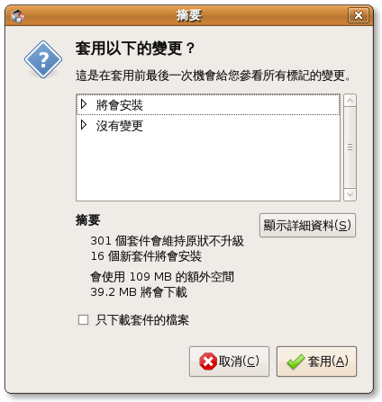

也紀念我們永遠的朋友 李士傑先生（Shih-Chieh Ilya Li）。
開放源碼桌面排版軟體 Scribus（1）
在出版實務上，我們雖然常利用文書處理軟體，如 Microsoft Word 等，來製作原稿，不過等到要輸出前，所有的文字都一定必須輸入到桌面排版軟體（Desktop Publishing Software）排版，因為桌面排版軟體對於版面的製作比 Word 來得更有彈性，能夠輸出較為美觀的版面。
目前常用的桌面排版軟體大多數是商業軟體，如 Quark、Adobe InDesign 等，不過我們今天要初步介紹一款開放源碼的桌面版排軟體 Scribus。Scribus 也許遠不如前述的商業軟體常見，不過基本的功能它一樣也不缺，非常適合作為排版學習或是非營利出版使用。
在介紹 Scribus 之前，我們必須先弄清楚兩個基礎觀念：
一、桌面排版軟體不是文書處理軟體：如果你想用桌面排版軟體來撰寫文章、處理文字，那你可就找錯軟體了，雖然桌面排版軟體的版面編排功能強大，不過在文字輸入方面，卻遠不如文書處理軟體來得容易且方便，因此一般上，我們都會先使用文書處理軟體撰寫文字並存成純文字文件後，再輸入桌面排版軟體使用。使用純文字格式的原因是因為大多數桌面排版軟體都支援匯入這個格式。另外，由於純文字格式無法保存格式，因此必須在你撰寫的文字前加註以指示編排方式，例如大標題就在前面加上「大標：」。
二、版面編排是由塊狀拼湊而成：其實編排版面的原理很簡單，基本的版面是由幾個塊狀的區域拼湊而成，這點和文書處理軟體的條狀編排非常不同。你可以把它當成由文字區塊、圖片區塊、表格區塊和圖層所拼湊而成的拼圖，不過這張拼圖完成的模樣你必須先在腦子中規劃好，然後再使用桌面排版軟體慢慢地把它「拼」出來。
有了以上兩點認識後，我們接下來就來看 Scribus 的基本操作吧！
安裝 Scribus
1、在 Ubuntu 中安裝 Scribus 非常簡單，我們可以使用系統內建的 Synaptic 套件管理程式來安裝。請在主功能表中的【系統】->【Synaptic 套件管理程式】上按一下滑鼠左鍵。
2、然後在「Quick Search」區域中輸入「Scribus」，然後就會出現 Scribus 的相關套件。
3、在「scribus」上按一下滑鼠右鍵，並選擇【標記為安裝】。
4、然後 Synaptic 套件管理程式就會自動幫你把所需要的套件勾選起來，你也可以順便安裝 Scribus 的支援套件，如「scribus=template」這個額外的模版套件。選擇好後，請在〔套用〕按鈕上按一下滑鼠左鍵。
5、接著 Synaptic 套件管理程式會問你是否套用變更，請按一下〔套用〕按鈕。

6、然後 Synaptic 套件管理程式就會自動開始安裝你所選的套件。
7、安裝完成後，在〔關閉〕按鈕上按一下滑鼠左鍵即可完成安裝。
啟動 Scribus
1、Scribus 安裝完成後，我們可以在主功能表中的【應用程式】->【美工繪圖】中找到「Scribus」，在上面按一下滑鼠左鍵即可啟動 Scribus。
2、啟動 Scribus 後，你會看到一個「新建檔案」視窗，今天我們來排一個單頁文件，熟悉一下 Scribus 中基礎的圖層、文字框、圖片框和表格的操作。因此我們就保持預設設定，並按一下〔確定〕按鈕即可，Scribus 會自動產生一個上下左右各留白 40pt 的 A4 文件。
圖片框的使用方式
在排版軟體中，要插入一張圖片，必須先插入一個圖片框，然後再將圖片置入。這可以讓你方便地改變圖片框的形狀，以符合排版的需求，例如你在排版時，突然想把一個方形的圖片框改為圓形，你只要調整圖片框的形狀，置入的圖就會隨著你的圖片框改變形狀。
插入圖片框
1、空白文件產生後，首先我們先插入一個圖片框，用來作為標題的背景圖。請按一下功能表中的【插入】->【圖片框】。
2、按下按鈕後，你的滑鼠指標會變成圖片框指標，我們可以用它在版面上拖曳出圖片框的範圍。
3、在所想要的位置拖曳出圖片框後，請在圖片框上按一下滑鼠右鍵，並選擇【匯入影像…】。
匯入影像
1、按下【匯入影像…】後，你會看到一個「打開」視窗，讓你可以選擇所想要的圖片，選後好按一下〔打開〕按鈕即可。
2、插入圖片後，你可以看到圖片以原來的大小插入圖片框的區域中，在圖片框的範圍裡按一下滑鼠右鍵，並選擇【屬性】來調整圖片的大小。
3、按下【屬性】後，你會看到一個「屬性」視窗，你可以在「圖片」區域中找到「自由縮放」選項，勾選後調整「X-縮放」和「Y-縮放」到適當的大小。

4、調整好後，你可以看到圖片依你所調整的大小出現在圖片框中。接著為了美觀，我們來把圖片框的四個角改成圓角。請依前述方式叫出「屬性」視窗，然後你可以在「形狀」區域中找到「圓角」設定，設定你想要的弧度即可。

5、設定好後，你就可以在主畫面中看到你剛剛所插入的圖片框有了圓滑的角度了。
增加陰影
1、為了美觀和突顯這張圖片，我們可以用一個簡單的方式來為圖片框加上陰影，請在圖片框上按一下滑鼠右鍵，並選擇【複製】。
2、然後請在空白處按一下滑鼠右鍵，並選擇【貼上】，將剛剛複製的圖片框貼在空白處。
3、然後在剛剛複製的圖片框上按一下滑鼠右鍵，並選擇【轉換】->【多邊形】。
4、這個功能會依圖片框的形狀將圖片框轉換成一個多邊形。請在轉換好的多邊形上按一下滑鼠右鍵，並選擇【屬性】。
5、接著你會看到一個「屬性」視窗，請在「顏色」區域中，選擇你要填入的顏色，並在「Opacity」欄位輸入你想要的透明度。

6、然後在「線條」區域中，將「線條寬度」欄位設為「0pt」。
7、接下來將設定好的多邊形拖到原來的圖片框上，並調整好你想要的陰影位置，你可以使用「屬性」視窗中的「X, Y, Z」區域來作微調。
8、然後在多邊形上按一下滑鼠右鍵，並選擇【圖層】->【降低到底部】。
9、將多邊形送到最底圖層後，你就可以發現你的圖片邊緣多了淡淡的陰影了，不過這種方法純粹是方便而已，陰影邊緣卻過於明確，如果你想要有羽化模糊的陰影，就必須把圖片輸入到 GIMP 處理。今天我們暫且不提這部分。
文字框的使用
製作好標題背景圖後，接下來我們就要輸入標題了。在排版軟體中，除了裝飾性文字外，所有的文字都要放入文字框中，讓我們可以方便地以塊狀的方式來處理文字。今天我們就來排排常見的兩欄式排版。
插入文字框
1、要插入文字框，請在主功能表中選擇【插入】->【文字框】。
2、插入文字框後，我們可以先在文字框上按著滑鼠左鍵將它施曳到大概的位置。
3、由於標題的文字量較少，我們就來看看如何直接輸入文字吧。請在文字框上按一下滑鼠右鍵，並選擇【編輯文字…】。
4、然後你就可以看到一個「故事編輯器」視窗，我們可以在主要的空白區域中輸入我們要的文字，並使用上面的功能表來調整文字的格式和大小。
5、調整好後，你就可以看到文字出現在我們放置文字框的地方了。
置入大量文字
1、接下來我們要置入兩欄式文字的文字框，由於兩個文字框必須對齊，我們可以利用參考線的功能來幫助我們完成這項工作。請在版面左方依上面方式置入一長形的文字框後，然後從在主畫面上的尺規按住滑鼠左鍵，接著拖曳到你要產生參考線的地方。
2、接著我們在版面右方置入另一個長形的文字框，然後施曳它的底邊，使其對齊我們剛剛畫的參考線。要注意的是，這兩個文字框目前是獨立的兩個文字框，彼此互不相連。
3、接著我們就可以置入大量文字了，一般來說，我們可以在文字框上按一下滑鼠右鍵，並選擇【匯入文字…】，然後再選擇所要置入的純文字檔即可以將文字檔中的文字置入文字框中。不過今天我們用【範例文字】來代替。這個功能可以讓你在還沒有收到文字檔時，預先將文字置入，看看排出的效果，這在正式排版前用來確定版面的試排非常有用。
4、按下【範例文字】後，你就可以看到 Scribus 自動產生了一大串文字，並置入你所選擇的文字框中，這時我們可以在文字框的右下角發現一個小小的加號，這表示文字太多了，這個文字框放不下，所以沒有完全顯示。
5、這時如果我們想要將沒有顯示出來的文字顯示在另一個文字框中，就必須把兩個文字框串聯起來，讓文字可以依序排在下一個文字框中。請按住鍵盤上的〔Shift〕並在兩個文字框上按一下滑鼠左鍵就可以同時選取兩個文字框，接著按一下功能表上的〔串聯文字框〕按鈕。
6、然後這兩個文字框就會串聯起來，多出來無法顯示的字就會出現在下一個文字框中了，而其中的箭頭則表示文字的流向。重覆執行這個步驟，你就可以串聯更多文字框，這樣無論多長的文章都有辦法顯示出來了。
細部裝飾
接著我們可以做一下細部的裝飾，讓文字更容易閱讀。例如叫出「故事編輯器」將不同的段落中間空一行，並使首字變大，這可以讓各段落更明顯、更容易閱讀。
表格的使用
除了文字外，表格也是排版不可或缺的一部分，它可以使雜亂的資料以清楚明白的方式呈現，現在就讓我們來看看在 Scribus 中如何使用表格。
插入表格
1、請在主功能表中選擇【插入】->【表格】。
3、接著你可以看到「插入表格」視窗，請輸入你所需要的行數和列數後，按一下〔確定〕按鈕。
4、接著你就可以在版面上看到表格了。
表格的輸入和裝飾
1、在 Scribus 中表格其實就是一組組合在一起的文字框，所以如果你要合併儲存格，只要解開群組後，並將不需要的儲存格刪除，再將留下來的儲存格調整至適當大小即可。圖中是調整過後，以和文字框相同的方式輸入文字後的表格。
2、這樣的表格好像還是不容易閱讀，因此我們可以在表格上按一下滑鼠右鍵，並選擇【屬性】叫出「屬性」視窗，並在「顏色」區域中，調整表格的顏色，讓它更容易閱讀。
3、調整好表格的顏色後，一個包含圖片框、文字框、表格和圖層的單頁排版就完成了！
（待續）
您也許有興趣閱讀以下文章:
- 開放源碼桌面排版軟體 Scribus（2） - 2009-12-22
專欄總覽


E-Mail：contact@openfoundry.org Address：台北市南港區研究院路2段128號 中央研究院資訊科學研究所 . 隱私權條款. 使用條款

評論
另外我已下載GIMP但是點選編 輯圖片都會顯示"GIMP遺失"
請幫助我!